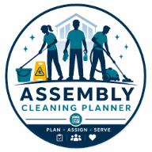
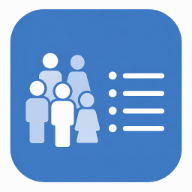
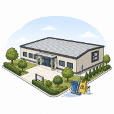
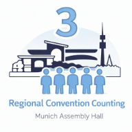

Assembly Attendant Tool
Streamlined attendant coordination and duty planning for one-day assemblies.
Effiziente Ordner-Koordination und Dienstplanung für eintägige Kreiskongresse.
Browser-based tools for planning, scheduling and internal coordination.
Browser-basierte Tools für Planung, Zeitpläne und interne Koordination.
Streamlined attendant coordination and duty planning for one-day assemblies.
Effiziente Ordner-Koordination und Dienstplanung für eintägige Kreiskongresse.

Cleaning schedules and shift coordination for one-day assemblies.
Reinigungs-Zeitpläne und Schichteinteilung für eintägige Kreiskongresse.

Attendance counting tool for one-day assemblies with slips and summary.
Zähl-Tool für Kreiskongresse mit Zettelerfassung und Zusammenfassung.
Planning microphone assignments, shifts and support during meetings.
Planung von Mikrofondiensten, Schichten und Support während der Versammlung.

Managing details and availability of congregation volunteers.
Verwaltung von Details und Verfügbarkeiten der Versammlungs-Helfer.

Annual deep cleaning and schedules for multi-congregation halls.
Jährliche Grundreinigung und Pläne für Gemeinschafts-Säle.
Coordination of public talks, speakers and outlines from imported data.
Koordination von öffentlichen Vorträgen, Rednern und Dispositionen.

Coordination of audio/video assignments for regional conventions.
Koordination der Audio/Video-Aufgaben für Regionalkongresse.
Detailed shift planning for attendants at regional conventions.
Detaillierte Schichtplanung für Ordner auf Regionalkongressen.
Cleaning coordination for three-day regional conventions.
Reinigungskoordination für dreitägige Regionalkongresse.

Attendance counting for three-day regional conventions.
Anwesendenzahlen-Tool für dreitägige Regionalkongresse.
Tool for convention committees to manage and communicate with volunteers.
Tool für Kongress-Komitees zur Verwaltung von Helfern.